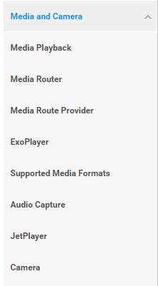
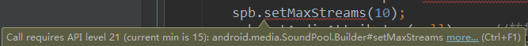
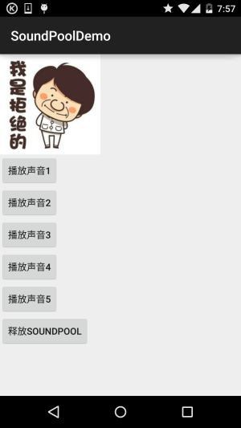

一、本节引言：
第九章给大家带来的是Android中的多媒体开发，与其说是多媒体开发还不如是多媒体相关API的 的使用，说下实际开发中我们做了一些和多媒体搭边的东西：拍照，录音，播放音乐，播放视频...
嗯，好吧，好像就这些了是吧，比如播放音乐，我们只是调用MediaPlayer，找到音乐文件， 然后调用下play方法播放而已...当然真正的多媒体开发又是另一个领域了，音视频的编码解码， 我等渣渣暂时只能仰望哈，我们知道怎么去调用这些API就好了！对了还是要科普下Android多媒体 框架的一些常识：
在Android上，预设的多媒体框架(multimedia framework)是OpenCore。OpenCore的优点是兼顾了 跨平台的移植性，而且已经过多方验证，所以相对来说较為稳定；但是其缺点是过於庞大复杂， 需要耗费相当多的时间去维护。而从Android 2.0开始，Google引进了架构稍微简洁一点的 Stagefright，当然没有完全抛弃OpenCore，主要是做了一个OMX层，仅仅是对OpenCore的 omx-component部分做了引用。本来有逐渐取代OpenCORE的趋势，不过在今年八月份发现了 一个Stagefright漏洞，该漏洞允许远程代码执行，通过利用发送一个特制的MMS消息。
该漏洞对Android 2.2及更新版本均产生影响，对4.1及更新版本影响相对较弱。 不明觉厉(都不知道在说什么JB)，嗯，好吧，科普完毕...这些东西知道下就好！
对了这个多媒体框架处于Android架构的第三层(Libraries)的Media Framework！ 另外如果你想知道Android这套多媒体框架支持什么类型的音视频数据可见官方文档：
Supported Media Formats
你可以在这里直接点Media and Camera然后看下面的文档：

嗯，开头废话太多了，差点忘了今天的主角是SoundPool了，如题，SoundPool一般用来 播放密集，急促而又短暂的音效，比如特技音效：Duang~，游戏用得较多，你也可以为你的 APP添加上这个音效，比如酷狗音乐进去的时候播放"哈喽，酷狗"，其实这个创意还是不错的 间接的让用户知道了当前播放器的音量，不然用户一放歌，突然来了一发小苹果，引得附近 大妈起舞就不好了是吧；除了可以在音乐播放器加，你还可以在普通APP加上，比如收到推送 信息或者新的聊天信息，然后播放提示音，比如超级课程表新版本，加了这玩意，收到推送 信息会播放一段短促的"表表"的声音！SoundPool对象可以看作是一个可以从APK中导入资源 或者从文件系统中载入文件的样本集合。它利用MediaPlayer服务为音频解码为一个原始16位 PCM流。这个特性使得应用程序可以进行流压缩，而无须忍受在播放音频时解压所带来的CPU 负载和延时。SoundPool使用音效池的概念来管理多个播放流，如果超过流的最大数目， SoundPool会基于优先级自动停止先前播放的流，另外，SoundPool还支持自行设置声音的品质、 音量、 播放比率等参数。好了，话不多说，开始本节内容： 官方API文档：SoundPool
二、相关方法介绍：
1)构造方法：
SoundPool(int maxStreams, int streamType, int srcQuality) 参数依次是：
- ①指定支持多少个声音，SoundPool对象中允许同时存在的最大流的数量。
- ②指定声音类型，流类型可以分为STREAM_VOICE_CALL, STREAM_SYSTEM, STREAM_RING,STREAM_MUSIC 和 STREAM_ALARM四种类型。在AudioManager中定义。
- ③指定声音品质（采样率变换质量），一般直接设置为0！
在低版本中可以用上述构造方法，而API 21(Android 5.0)后这个构造方法就过时了！ 而用到一个SoundPool.Builder的东东，我们要实例化SoundPool只需调用：
SoundPool.Builder spb = new SoundPool.Builder(); spb.setMaxStreams(10); spb.setAudioAttributes(null); //转换音频格式 SoundPool sp = spb.build(); //创建SoundPool对象
要使用上述代码的话，TargetSDK版本要设置大于等于21哦！而且如果minSDK版本小于21 会出现下面的提醒：

2）常用方法介绍：
①加载声音资源：
- load(Context context, int resId, int priority)
- load(String path, int priority)
- load(FileDescriptor fd, long offset, long length, int priority)
- load(AssetFileDescriptor afd, int priority) 上述方法都会返回一个声音的ID，后面我们可以通过这个ID来播放指定的声音
参数介绍：
- context：上下文
- resId：资源id
- priority：没什么用的一个参数，建议设置为1，保持和未来的兼容性
- path：文件路径
- FileDescriptor：貌似是流吧，这个我也不知道
- AssetFileDescriptor：从asset目录读取某个资源文件，用法： AssetFileDescriptor descriptor = assetManager.openFd("biaobiao.mp3")；
②播放控制：
play(int soundID, float leftVolume, float rightVolume, int priority, int loop, float rate)
参数依次是：
- soundID：Load()返回的声音ID号
- leftVolume：左声道音量设置
- rightVolume：右声道音量设置
- priority：指定播放声音的优先级，数值越高，优先级越大。
- loop：指定是否循环：-1表示无限循环，0表示不循环，其他值表示要重复播放的次数
- rate：指定播放速率：1.0的播放率可以使声音按照其原始频率，而2.0的播放速率，可以使声音按照其 原始频率的两倍播放。如果为0.5的播放率，则播放速率是原始频率的一半。播放速率的取值范围是0.5至2.0。
③资源释放：
可以调用release()方法释放所有SoundPool对象占据的内存和资源，当然也可以根据声音 ID来释放！
四、使用代码示例：
运行效果图：

当点击按钮的时候会，"Duang"一下，这里演示了两种load的方法，分别是raw和assests！
关键代码：
MainActivity.java：
public class MainActivity extends AppCompatActivity implements View.OnClickListener{
private Button btn_play1;
private Button btn_play2;
private Button btn_play3;
private Button btn_play4;
private Button btn_play5;
private Button btn_release;
private AssetManager aManager;
private SoundPool mSoundPool = null;
private HashMap<Integer, Integer> soundID = new HashMap<Integer, Integer>();
@Override
protected void onCreate(Bundle savedInstanceState) {
super.onCreate(savedInstanceState);
setContentView(R.layout.activity_main);
aManager = getAssets();
try {
initSP();
} catch (Exception e) {
e.printStackTrace();
}
bindViews();
}
private void bindViews() {
btn_play1 = (Button) findViewById(R.id.btn_play1);
btn_play2 = (Button) findViewById(R.id.btn_play2);
btn_play3 = (Button) findViewById(R.id.btn_play3);
btn_play4 = (Button) findViewById(R.id.btn_play4);
btn_play5 = (Button) findViewById(R.id.btn_play5);
btn_release = (Button) findViewById(R.id.btn_release);
btn_play1.setOnClickListener(this);
btn_play2.setOnClickListener(this);
btn_play3.setOnClickListener(this);
btn_play4.setOnClickListener(this);
btn_play5.setOnClickListener(this);
btn_release.setOnClickListener(this);
}
private void initSP() throws Exception{
//设置最多可容纳5个音频流，音频的品质为5
mSoundPool = new SoundPool(5, AudioManager.STREAM_SYSTEM, 5);
soundID.put(1, mSoundPool.load(this, R.raw.duang, 1));
soundID.put(2 , mSoundPool.load(getAssets().openFd("biaobiao.mp3") , 1)); //需要捕获IO异常
soundID.put(3, mSoundPool.load(this, R.raw.duang, 1));
soundID.put(4, mSoundPool.load(this, R.raw.duang, 1));
soundID.put(5, mSoundPool.load(this, R.raw.duang, 1));
}
@Override
public void onClick(View v) {
switch (v.getId()){
case R.id.btn_play1:
mSoundPool.play(soundID.get(1), 1, 1, 0, 0, 1);
break;
case R.id.btn_play2:
mSoundPool.play(soundID.get(2), 1, 1, 0, 0, 1);
break;
case R.id.btn_play3:
mSoundPool.play(soundID.get(3), 1, 1, 0, 0, 1);
break;
case R.id.btn_play4:
mSoundPool.play(soundID.get(4), 1, 1, 0, 0, 1);
break;
case R.id.btn_play5:
mSoundPool.play(soundID.get(5), 1, 1, 0, 0, 1);
break;
case R.id.btn_release:
mSoundPool.release(); //回收SoundPool资源
break;
}
}
}
代码非常简单，另外如果你点击了最后一个按钮的话，SoundPool就会被释放，然后再其他按钮 就不会Duang了哦~
五、OnLoadCompleteListener监听声音文件是否加载完毕
嗯，这个是临时想起的，写完在写另一篇的时候突然想起，用法也很简单，我们可以 往上面的代码中添加OnLoadCompleteListener这个东东，然后重写onLoadComplete()方法 ，最后为SoundPool对象设置这个东东即可！
mSoundPool.setOnLoadCompleteListener(new SoundPool.OnLoadCompleteListener() {
@Override
public void onLoadComplete(SoundPool soundPool, int sampleId, int status) {
Toast.makeText(MainActivity.this,"加特技准备完毕~",Toast.LENGTH_SHORT).show();
}
});
六、示例代码下载：
七、本节小结：
好的，本节给大家科普了一下Andorid多媒体的一些常识，以及教了大家如何为自己的APP添加音效， 只需通过简单的SoundPool即可实现，还等什么，往你的应用加上这个玩意，让你的应用Duang起来啊~，配合Demo食用更佳~